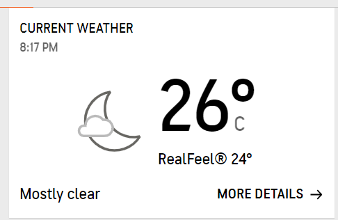

Cidde şehri, Hicaz bölgesinin ortasındaki ana limandır ve Mekke'nin batısında, Kızıldeniz kıyısında yer alır ve şehrin adı "soy" veya "büyükanne" anlamına gelir.Müslümanlar onların üzerindedir. Mekke ve Medine gibi kutsal şehirlere giden yol ve bunların ticari temellerini atma kredisi, burayı H. 646'da Kızıldeniz'i geçen Müslüman hacılar için bir liman yapan Halife Othman'a aittir. İngilizler, MS 1927'de Cidde Antlaşması'nda Hicaz ve Necid bölgeleri üzerinde Suudi egemenliğini tanımış, ardından Cidde, Suudi Arabistan Krallığı'na dahil edilmiş ve MS 1947'de surlar yıkılmış.
Ciddenin hava durumu
22 Aralık çarşamba günün Cidde hava durumu:

*Detaylı bilgiler için fotoğraf üzerinde tıklayınız